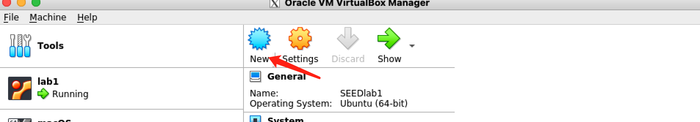
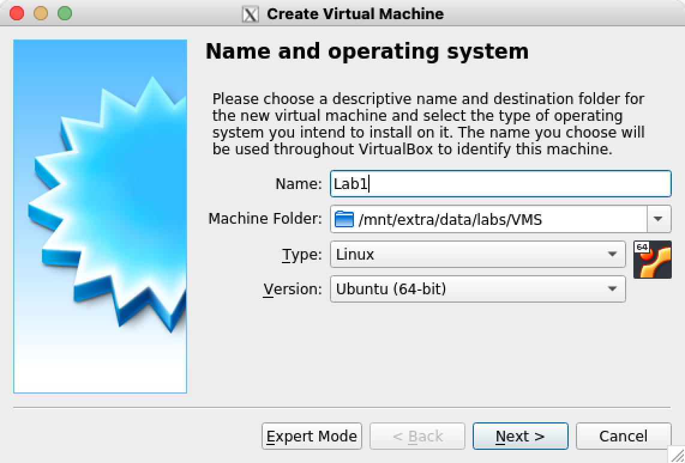
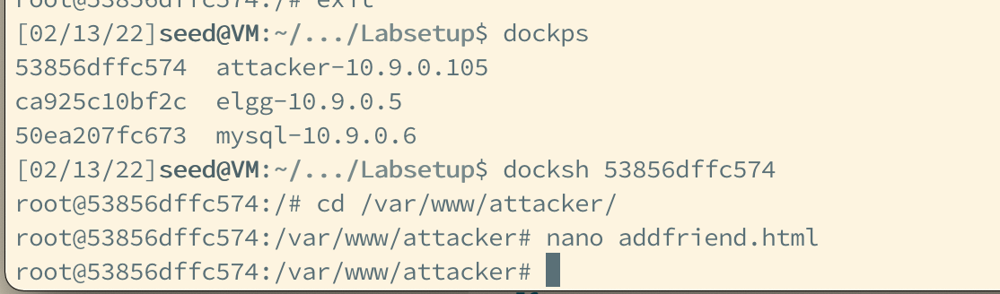

Inside the Lab VM:
wget --no-check-certificate -c https://seedsecuritylabs.org/Labs_20.04/Files/Web_XSS_Elgg/Labsetup.zipunzip Labsetup.zip && cd Labsetup/etc/hosts file, eg: echo 10.9.0.5 www.seed-server.com | sudo tee -a /etc/hosts docker-compose up -dwww.seed-server.comalice, Password: seedalice; or Username: boby, Password: seedbobyInside the Lab VM:
wget --no-check-certificate -c https://seedsecuritylabs.org/Labs_20.04/Files/Web_CSRF_Elgg/Labsetup.zipunzip Labsetup.zip && cd Labsetup/etc/hosts file, eg: echo 10.9.0.5 www.seed-server.com | sudo tee -a /etc/hosts ， echo 10.9.0.5 www.example32.com | sudo tee -a /etc/hosts, 10.9.0.105 www.attacker32.comdocker-compose up -dwww.seed-server.comalice, Password: seedalice; or Username: samy, Password: seedsamydockps to check the container "attacker"'s id, and use docksh <container id> to edit attacker's html inside a container. eg:[02/13/22]seed@VM:~/.../Labsetup$ dockps
53856dffc574 attacker-10.9.0.105
ca925c10bf2c elgg-10.9.0.5
50ea207fc673 mysql-10.9.0.6
[02/13/22]seed@VM:~/.../Labsetup$ docksh 53856dffc574
root@53856dffc574:/# cd /var/www/attacker/
root@53856dffc574:/var/www/attacker# nano addfriend.html

You can edit Boby's profile from this link: http://www.seed-server.com/profile/boby/edit
Make some changes, so that an Alert Window will be prompted:

Boby commented on a post of Alice, when Alice views the comment, Alice's cookie will be stolen.
You may need to write some Javascript code to send the victim's cookie to your server
Share your solutions.
Alice and Samy. Samy wants to become a friend to Alice, but Alice refuses to add him to her Elgg friend list. Samy decides to use the CSRF attack to achieve his goal. He sends Alice an URL (via an email or a posting in Elgg); Alice, curious about it, clicks on the URL, which leads her to Samy’s web site: www.attacker32.com. Pretend that you are Samy, describe how you can construct the content of the web page, so as soon as Alice visits the web page, Samy is added to the friend list of Alice (assuming Alice has an active session with Elgg).
You need to edit the addfriend.html insider the attacker-10.9.0.105 container, and the page can be accessed from http://www.attacker32.com/addfriend.html
Samy plans to use a CSRF attack to modify Alice's profile.
CSRF token.